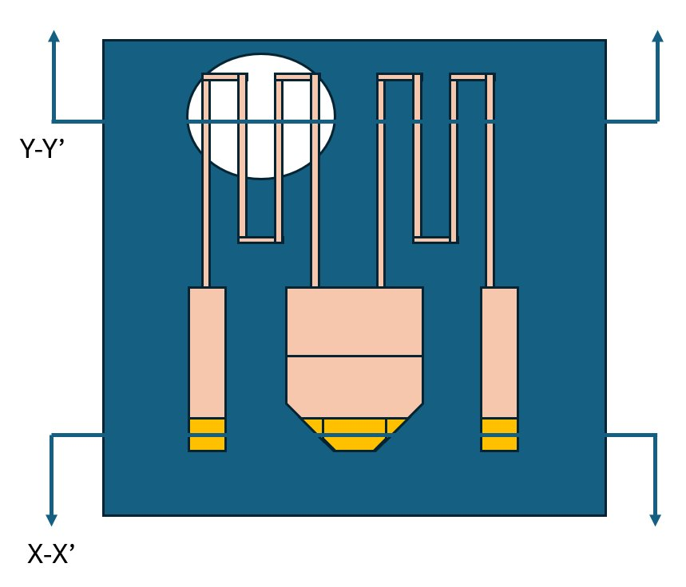
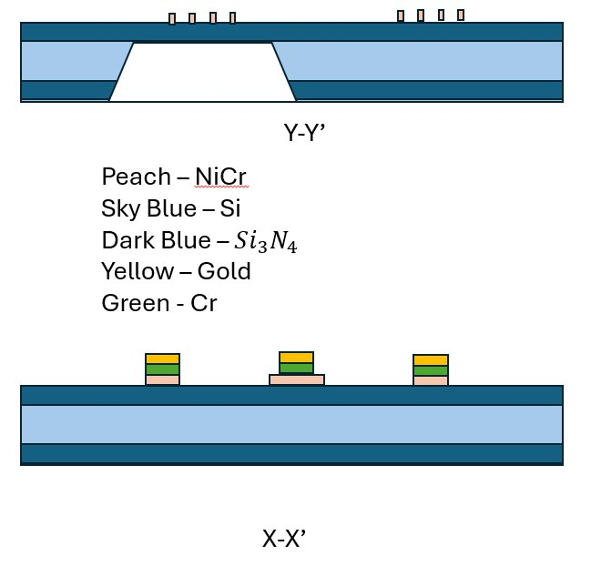
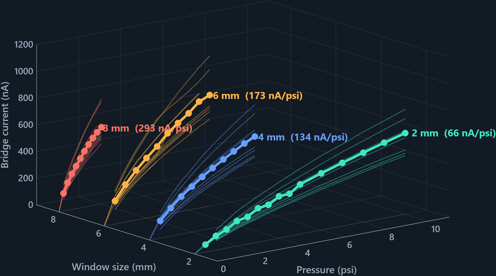

How it senses pressure
Pressure pushes the membrane, the membrane stretches the NiCr serpentines on it, and stretching a resistor (longer, thinner) raises its resistance. Matched reference resistors sit on the rigid frame, so the bridge only goes out of balance when the membrane flexes. NiCr was chosen for its high resistivity and low temperature coefficient: more signal, less drift.


Want to see it move? The interactive 3D model on the main page deflects the membrane with a pressure slider and colors it by stress.
Geometry from crystal planes
KOH etches (100) silicon fast but nearly stops on the {111} planes, which meet the surface at 54.74°. Through a 500 µm wafer, each side of the opening walks inward by 500 / tan 54.74° = 353.6 µm, so the membrane is always 707 µm narrower than the window drawn on the mask.
| Mask window | Membrane width | Serpentine turns | Effective resistor length |
|---|---|---|---|
| 8 mm | 7.29 mm | 4 | 30.2 mm |
| 6 mm | 5.29 mm | 4 | 22.2 mm |
| 4 mm | 3.29 mm | 6 | 21.3 mm |
| 2 mm | 1.29 mm | 8 | 12.4 mm |
Measured resistor lengths came in 0.1 to 0.4% short of design, consistent with slight lithographic bias in the printed gaps.
The thin film is not the bulk metal
Using bulk NiCr resistivity with the measured length, width and thickness predicted resistances about 35 times lower than what the probe station read. Propagating the uncertainty in L, w and t covers at most 16% of that, so geometry error is not the story. In a ~40 nm film, grain-boundary and surface scattering push resistivity far above bulk.
Thickness maps across two wafers showed the film thicker at the center (magnetron sputtering concentrates flux there) and deposition rates of 110 and 97.5 Å/min against a nominal 125. Variation within a wafer was larger than between runs, so the process is repeatable but not uniform. Rotating the substrate during sputtering would even it out.
Theory against measurement
Under pressure these membranes bend far more than they are thick, so they behave like stretched drumheads, not stiff plates. In that regime the center deflection goes as wc ≈ 9.21 d4/3 p1/3 (µm, with d in mm and p in psi). Even the smallest membrane deflects 12.2 µm at 1 psi, about 13 times its 0.95 µm thickness, which justifies the model.

The measured currents ran far above the model: for a 2 mm device at 1 psi, about 108 nA measured against roughly 12 nA predicted. My reading of why:
- The model treats strain as uniaxial; a square membrane strains biaxially, so the gauges see more stretch.
- The curves flatten at higher pressure, the signature of membrane stretching taking over from bending, which the linearized output model does not capture.
- LPCVD nitride carries built-in tensile stress, and any KOH attack on the gauges through flaws in the protective coating would shift their resistance before testing.
Sensitivity against survival
| Membrane | Device | Sensitivity | Note |
|---|---|---|---|
| 2 mm | #18 | ~76 nA/psi | Survives to 10 psi |
| 4 mm | #19 | ~137 nA/psi | |
| 6 mm | #21 | ~190 nA/psi | |
| 8 mm | #11 | ~311 nA/psi | Tested only to 1.8 psi |
Bigger membranes deflect more, strain the gauges more, and give about four times the signal. The 2 mm membrane gives up sensitivity for strength: lower stress at any pressure keeps it below the fracture limit of the nitride.
Why devices failed
- Incomplete lift-off left NiCr bridging the serpentine lines and shorted the sensor.
- Poor descum before deposition weakens adhesion, so metal peels and the resistor opens.
- The 24-hour, 63°C KOH etch relied only on a fluorocarbon coat this semester; any pinhole let KOH corrode the NiCr and the Au pads.
- Wafer edges got thinner film, so edge devices were more fragile and more likely to fail inspection.